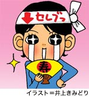

司ぐり子、という名をもらった。
昨年末から、宴席で自分がいかにモテないかを語り始めたら、これが妙に受けた。
30歳、独身、一部上場企業のОＬの私生活がさほど珍しいとは思わないが、「私、モテません」と宣言したうえで、あけすけに話す失敗談は、酒のつまみにちょうどいいらしい。
晶文社で働く旧知のО君は、この９月に営業職から編集職に転じたばかり。浅草の洋食店でこじんまりと祝杯を挙げて、少しばかり酔いが回ったころ、「○○さん（本名）、ウチのＨＰにちょっと書いてみませんか」と、О君がいきなり切り出した。「へ？」。
なんでも、「モテない私のモテない話」をそのまま載っけるという。「う〜ん、でも、一応社会人だし……」と躊躇していると、
「じゃあ、ペンネームつけましょう！」
同席していたО君の上司、六さんがにやりと笑う。
「『司ぐり子』、どうこれ、いいんじゃない？」
この夜、われわれが憩った洋食店の名は、「グリルつかさ」。だから、司ぐり子……。
おかしい。こんなはずじゃなかった。昨年のいまごろに描いていた１年後の私は、たしかに別名を名乗っているはずだった。しかし、それはあくまで「姓」に限っての話。
なんで、ペンネームなんかつけられているのか。うっかりにもほどがあるぞ。
◇
１年前の秋。遅い夏休みをとり、沖縄へ向かった。もちろんひとりで。
目的はただひとつ。沖縄は宜野湾市で評判の女性占い師に「結婚運」を見てもらうためだ。当時、私は、わが恋愛の無風状態に生ぬるいあせりを覚えていた。積極的にモテたいわけではない。けれど、まったく出会いがないのも不安である。いや、もうすでに出会っているのかもしれないが、鈍感ゆえに、運命の人だと気づいていないだけなのかもしれない。すれ違う男女の影絵――。妄想だけが頭のなかを駆け巡り、その明快な回答を見知らぬ占い師に求めて私は機上の人となった。
実は、沖縄での占いは、そのときが初めてではない。25、26歳のころだったか、ＧＷを利用して、沖縄に遊びに行った（やはり、このときも、ひとりだ）。国際通りに面した雑居ビルの２階に、「喫茶サンフランシスコ」はあった。公設市場を目指して歩いていたところ、「手相＆コーヒーの店 １５００円」と書かれている真っ赤な看板に目を奪われ、うかつにも店内に入ってしまったのである。
そこで私は、中年の男性占い師にこう断言された。
「あなた、このままだとミヤコ蝶々さんみたいになりますね」
ちらりと手相を見ただけ、だ。
「ミ、ミヤコ、蝶々……」
しばし絶句。気を落ち着けて、発言の意味を訊ねる。
「僕はいちど蝶々さんと会ったことがあります。彼女は、芸の世界ではそれはたいへんな成功を収めたけれど、実生活では幸せじゃなかった。蝶々さん、こう言ってましたよ。『仕事はある、お金も持ってる。慕ってくれるお客さんもいる。だけど私はひとりぼっちや。寂しい人生や』って。あなたは、このままだと蝶々さんとそっくりになります」
私の手相は、運命線がまっすぐに縦断する。これは仕事運がめっぽう良いらしい。人にも恵まれる相を持っているという。が、反面、恋愛に関しては、甘え下手なこと著しく、来る者拒んで、去る者追わず。男性から見ると、「なに考えてるかわからないから、手を出すのはやめとこう」と敬遠されるタイプだとか。
（あ、当たっている……）
「顔はけっこう、可愛いいのにねぇ。フ〜」
私の顔をまじまじと眺めて、溜め息をつく男性占い師の瞳には、かなりはっきりと、
「ご同情申し上げます」
と書いてあった。
◇
こんな苦い経験をしたのにもかかわらず、また沖縄で恋占いを、と思った。
宜野湾の占い師の居所を訪ねると、そこは小さな化粧品店。沖縄の占い師は抱き合わせ商法が基本なのだろうか。真偽はわからない。
話を先に進める。占い師は、白髪交じりで恰幅のよい、――宮澤りえのママ似の女性だった。りえママ占い師は一枚のタロットカードを私に差し出した。その絵柄は、
「死に神」――。
「ど、どういうことなんでしょうか！？」
あのとき、私の声は間違いなく、うわずっていたと思う。りえママ占い師は大きな目をギロリと光らせた。
「男運が悪い！」
そんな、身もフタもない。しかも、悪いと指摘されるほど経験豊富でもない。そのあたりはわかって欲しいと、りえママに訴えた。
「男運というより、男を見る目がないのよ。あなた。だから、もうお見合いをなさい。人からの紹介でもいい。自分で選ぼうとせずに、周りから選んでもらいなさい」
はるばる沖縄まで飛んで、「お見合いのすすめ」である。暗い穴蔵があったら、いっそ冬眠してしまいたい。ママは言った。
「年内に出会いがあるわね。来年には結婚を決めていてもおかしくないわ」
その男性は堅い職業につき、いい背広を着ている。上司からできる奴と認められている、仕事人間。頑固で融通がきかなくて、変人……。流れるような口調で、次々と挙げられていく"運命の人"の特徴。
変人かぁ、変人かぁ、変人かぁ……変人でもいいか、この際……。
はるばる沖縄までやってきて、私は諦めをおぼえた。

これが１年前。まだ名字が変わっていないことは先述したとおり。思えば、私のモテない旅ははじまったばかりであった。 |